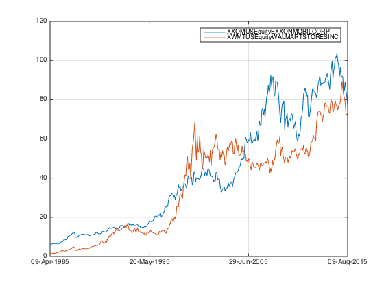
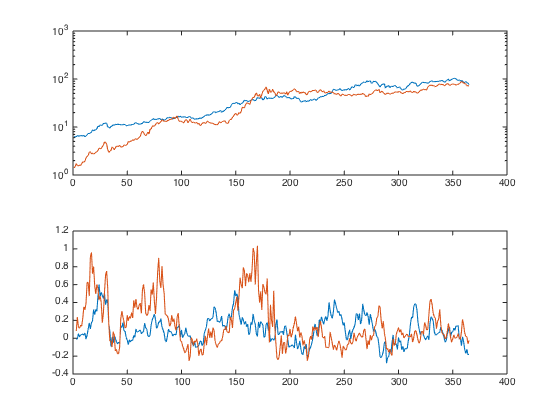
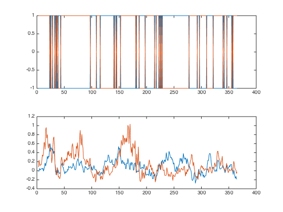
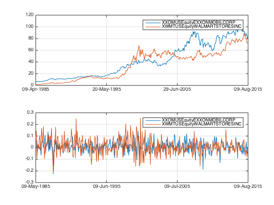
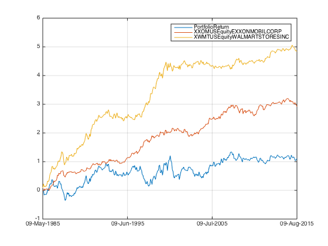

nion
nionIntroducing Mother of all Factors - MOM
Construct a simple momentum factor portfolio
Contents
Basic idea
- calcualte the momentum as defined by 12-1 month return.
- sort the portfolio according to the rank of momentum signal.
- long the top momentum stock and short buttom moment stock
- repeat and observe the result. let's roll @@@@ load ...
load('data_equity_list.mat'); load('data_field_list.mat'); load('data_historical_data.mat');
let's update the equity list with the information from the historical data
i = 1; for i = 1:size(history,1) if not(isempty(history{i,3})) equity_list(i,3) = history{i,3}.CNTRY_OF_DOMICILE; equity_list(i,4) = history{i,3}.NAME; equity_list(i,5) = history{i,3}.SECURITY_TYP; equity_list(i,6) = history{i,3}.MARKET_STATUS; equity_list(i,7) = history{i,3}.INDUSTRY_SECTOR; equity_list(i,8) = history{i,3}.INDUSTRY_GROUP; equity_list(i,9) = history{i,3}.INDUSTRY_SUBGROUP; else disp(sprintf('equity list <<%d>> is empty', i)); end end
equity list <<529>> is empty
now the equity list looks nice and proper. I like nice and proper...
equity_list(1:10,:)
ans =
Columns 1 through 5
'XOM US Equity' 'US' 'US' 'EXXON MOBIL CORP' 'Common Stock'
'WMT US Equity' 'US' 'US' 'WAL-MART STORES INC' 'Common Stock'
'HNR1 GR Equity' 'GR' 'DE' 'HANNOVER RUECK SE' 'Common Stock'
'TWX US Equity' 'US' 'US' 'TIME WARNER INC' 'Common Stock'
'GE US Equity' 'US' 'US' 'GENERAL ELECTRIC CO' 'Common Stock'
'MSFT US Equity' 'US' 'US' 'MICROSOFT CORP' 'Common Stock'
'HIGT BB Equity' 'BB' 'GB' 'HILTON GROUP PLC...' 'Belgium Cert'
'857 HK Equity' 'HK' 'CN' 'PETROCHINA CO LTD-H' 'Common Stock'
'9432 JP Equity' 'JP' 'JP' 'NIPPON TELEGRAPH...' 'Common Stock'
'PTR US Equity' 'US' 'CN' 'PETROCHINA CO LT...' 'ADR'
Columns 6 through 8
'ACTV' 'Energy' 'Oil&Gas'
'ACTV' 'Consumer, Cyclical' 'Retail'
'ACTV' 'Financial' 'Insurance'
'ACTV' 'Communications' 'Media'
'ACTV' 'Industrial' 'Miscellaneous Ma...'
'ACTV' 'Technology' 'Software'
'PRNA' 'Consumer, Cyclical' 'Entertainment'
'ACTV' 'Energy' 'Oil&Gas'
'ACTV' 'Communications' 'Telecommunications'
'ACTV' 'Energy' 'Oil&Gas'
Column 9
'Oil Comp-Integrated'
'Retail-Discount'
'Reinsurance'
'Multimedia'
'Diversified Manu...'
'Applications Sof...'
'Gambling (Non-Ho...'
'Oil Comp-Integrated'
'Telephone-Integr...'
'Oil Comp-Integrated'
our data is in the cells, this is a bit awkward.... let's start with something utterly simple. a portfolio of two equity. fts name is a bit restrictive, it cannot starts with a number, no space allowed in between. _ although admissible, will be understand as subscription by matlab plot.
i=1; while i<=2 security{i} = fints(history{i,1}(:,1),history{i,1}(:,2),regexprep(strcat('X',equity_list(i,1),equity_list(i,4)),'[^a-zA-Z0-9_]',''),'m','LAST_PRICE'); i = i+1; end
two potential problem here: 1) some equity name may not be unique after regexprep(), we need to strcat equity name with full name to make sure the uniqueness so that when we merge those two different ts won't be mistaken as the same. 2) history contains {[]}, this need to be cleaned up.
let's combine the fts.
px = merge(security{:}, 'SortColumns', 0);
let's take a look
plot(px);
Generate the signal
let's construct the momentum signal. we use 12-1 months returns, i.e. return start from 12 months agao to last months' close.
px_mat = fts2mat(px); i = 1; mom = nan(size(px_mat,1),size(px_mat,2)); while i <= size(px_mat,1) if i==1 || i ==2 mom(i,:) = nan(1,size(px_mat,2)); else mom(i,:) = (px_mat(i-1,:)-px_mat(max(1,i-12),:))./px_mat(max(1,i-12),:); end i = i+1; end
this is clumsy piece of code. but it is correct. let's take a look at the result.
figure subplot(2,1,1) semilogy(px_mat) subplot(2,1,2) plot(mom)
now that we have the signal, we can backtest the portformance of a market neutral portfolio constructed using this signal. we will long 1 unit of the the security with higher momentum, and short an equal amount of the other. our initial capital is $100.
a concise way would be to use portfolio_weight*securities_return. let's take a look:
this little monster convert time series data into ranks, by normalizing ranks to [-1 +1] we get the weight.
security_rank = tiedrank(mom')'; rank_max = max(security_rank,[],2); score = bsxfun (@rdivide, bsxfun(@minus,security_rank,(rank_max+1)/2), ((rank_max-1)/2)); portfolio_weight = score;
there is a small glitch here, the tiedrank function return average rank for a tie. If the first two mom is [0 0], the total portfolio weight wont sum up to zero. I need to fill the first two mom with [nan nan] instead.
before proceed let's do a bit sanity check to make sure everything is correct...
figure subplot(2,1,1) plot(score) subplot(2,1,2) plot(mom)
How to calculate portfolio return?
it loooks sound... now we have the portfolio weight, all we need to do is weight*rt isn't it? but there are two types of rt, simple arithmetic and geometric(log), which one should we use?
if the portfolio consists of only one security, so the weight =1. simply add arithmetic return up across period won't work. suppose the price start at 100, at next period it drop to 50, then it went back to 100.
with arithmetic return:
(50-100)/100 + (100-50)/50
ans =
0.5000
with geometric return:
log(50/100) + log(100/50)
ans =
0
so when we add total portfolio return across different period, we need to use geometric return.
how about single period? support we have a equal weight 50/50 portfolio, and we invested $100 in the whole portfolio, so $50 each in each securities. Both security start at 100, one went up to 200 at the end, the other dropped to 50. The portfolio value at the end is $100+$25 = $125
with arithmetic return:
0.5*(200-100)/100 + 0.5*(50-100)/100
ans =
0.2500
with geometric return:
0.5*log(200/100) + 0.5*log(50/100)
ans =
0
so in conclusion, we need to calculate weight*rt in each period using arithmetic return. Then convert those to geometric return using log(1+r).
log(2) log(0.5)
ans =
0.6931
ans =
-0.6931
this point was not very obvious to me initially. I don't think many people really understand it very well. The old saying 'a 50% drop requires a 100% recovery to breakeven' only applies when one is talking about arithmetic return.
another point is, signal generated at one period hence the portfolio weight should multiple with securities' return at the next period. otherwise we are seeing through the futures...
rt = tick2ret(px);
sanity check:
figure subplot(2,1,1) plot(px) subplot(2,1,2) plot(rt) (fts2mat(px(end))-fts2mat(px(end-1)))./fts2mat(px(end-1)) rt(end)
ans =
-0.0585 -0.0210
ans =
desc: LAST_PRICE || LAST_PRICE
freq: Monthly (3)
'dates: (1) ' 'XXOMUSEquityEXXONMO' 'XWMTUSEquityWALMART'
' ' 'BILCORP: (1) ' 'STORESINC: (1) '
'09-Aug-2015' [ -0.0585] [ -0.0210]
 gooood, return throught tick2ret ties out with arithmetic return. let's calculate the portfolio return.
rt_mat = fts2mat(rt); portfolio_rt_arithmetic = nansum((rt_mat.*portfolio_weight(1:end-1,:))')'; portfolio_rt_geometric = log(1+portfolio_rt_arithmetic);
the two [nan nan] is nagging... let's use fillts to fix it.
portfolio_rt_ts = fints(rt.dates,portfolio_rt_geometric,'PortfolioReturn');
portfolio_rt_ts = fillts(portfolio_rt_ts,0);
rt = fillts(rt,0);
Let's check out the portfolio performance.
all_rt_ts = merge(portfolio_rt_ts,rt,'SortColumns', 0);
figure
plot(cumsum(all_rt_ts));
 The strategy seems pretty useless, or is it? ; P